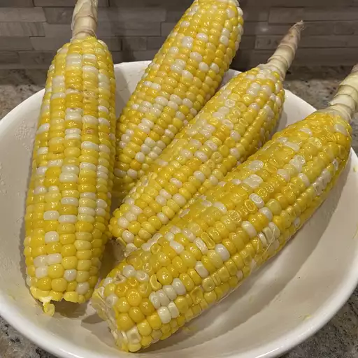

Corn on the Cob

Description
This sweet and easy to make Corn on the Cob Recipe is the best and tastiest corn that anyone can make!
Ingredients
- 2 Tablespoons white sugar
- 1 Tablespoon lemon juice
- 6 Ears corn on the cob, husks and silk removed
Steps
- Fill a large pot about 3/4 full of water and bring to a boil. Stir in sugar and lemon juice, dissolving the sugar. Gently place ears of corn into boiling water, cover the pot, turn off the heat, and let the corn cook in the hot water until tender, about 10 minutes.